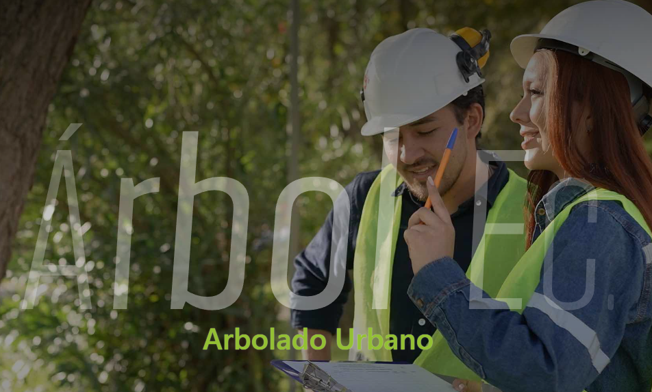
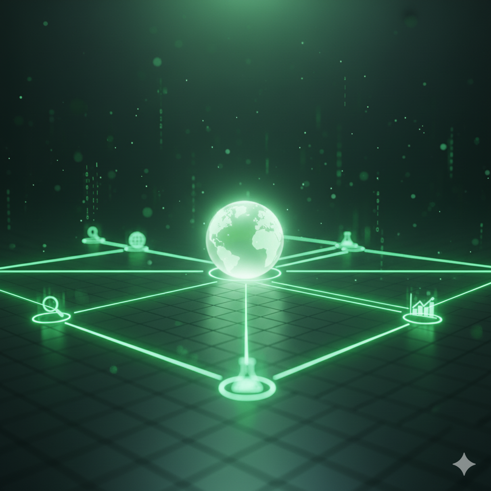

Árbol Urbano
Plataforma para el registro, monitoreo y gestión ambiental de los árboles urbanos en Loja.
Ver más →

La Universidad Nacional de Loja se compromete a estimular, guiar y perfeccionar los procesos de investigación e innovación científica y tecnológica, con la finalidad de acrecentar la construcción del saber, su divulgación, aplicación práctica y resonancia en el entorno respectivo y la sociedad.
Promueve, desarrolla, orienta y optimiza la actividad de investigación institucional.
Conoce la DirecciónDireccionan los programas y proyectos de investigación hacia la generación de conocimientos científicos y tecnológicos.
Conoce las Líneas y los ProgramasPor líneas de investigación y por períodos de ejecución.
Conoce los ProyectosPromueve, desarrolla, orienta y optimiza la actividad de investigación institucional.
Conoce nuestros centros de investigaciónPromueve, desarrolla, orienta y optimiza la actividad de investigación institucional.
Conoce las EstacionesHerbario y Jardin Botanico "Reinaldo Espinoza".
Conoce el Escenario de InvestigaciónEspacial de las principales enfermedades que afectan a la Región 7.
Conoce la GacetaPromueve, desarrolla, orienta y optimiza la actividad de investigación institucional.
Conoce las Redes y AlianzasPromueve, desarrolla, orienta y optimiza la actividad de investigación institucional.
Conoce la ProducciónGuías de investigación para Integración Curricular y Titulación.
Conoce más Guías
Investigación en botánica y biodiversidad para la conservación sostenible en el sur de Ecuador.

Investigación en ciencia, tecnología, ingeniería, arte y matemáticas para impulsar innovación, educación y desarrollo regional.

Investigación en energías solar, eólica e hidráulica para impulsar innovación científica y un futuro energético sostenible.

Investigación y creación artística que impulsa formación, colaboración y difusión cultural a nivel local e internacional.

Investigación en biotecnología aplicada, medio ambiente y desarrollo sostenible.

Investigación en movilidad, vehículos y transporte para soluciones sostenibles e innovación tecnológica en la sociedad y la industria.

Investigación en salud pública y epidemiología usando datos temporo-espaciales para mejorar el bienestar y la educación en la zona 7 del Ecuador.

Investigación en tecnología educativa para desarrollar soluciones innovadoras que mejoren la enseñanza y el aprendizaje en la región.

Investigación en educación para fortalecer la formación docente, los procesos de enseñanza y la vinculación con la sociedad.

Investigación en gestión ambiental y recursos naturales para promover sostenibilidad, conservación y adaptación al cambio climático.

Investigación en desarrollo territorial y ciencia regional para reducir desigualdades y promover planificación sostenible en la región.